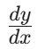

1. Dapat menjelaskan Konsep Turunan Fungsi
2. Dapat menemukan Sifat2 Turunan fungsi Meliputi formula turunan fungsi Aljabar dan Trigonometri,Turunan hasil jumlah, selisih, kali dan bagi 2 fungsi, serta turunan komposisi Fungsi
3. Menentukan Turunan fungsi aljabar dan trigonometri menggunakan sifat2 turunan
4. mengidentifikasi konsep kemonotonan fungsi, titik dan nilai stasioner, serta jenis ekstrimnya
5. menyelesaikan masalah sehari-hari dengan menerapkan konsep kemonotonan fungsi, titik dan nilai stasioner, serta jenis ekstrimnya
Lahir dari rasa penasaran manusia untuk membedah misteri perubahan sesaat, sejarah turunan merupakan sebuah drama intelektual yang bermula dari teknik "kelelahan" Archimedes di zaman Yunani Kuno, sebelum akhirnya meledak menjadi revolusi sains pada abad ke-17. Intrik terbesar dalam sejarah matematika ini memuncak ketika dua jenius, Sir Isaac Newton di Inggris dan Gottfried Wilhelm Leibniz di Jerman, secara terpisah menemukan kunci untuk "menghentikan waktu" secara matematis; Newton yang terobsesi dengan hukum gerak planet menggunakan pendekatan Fluxions untuk menghitung kecepatan gravitasi, sementara Leibniz yang visioner lebih fokus pada keindahan geometri garis singgung kurva. Meskipun perseteruan sengit sempat pecah mengenai siapa yang lebih dulu menemukan konsep ini, dunia justru berutang budi pada keduanya karena notasi

milik Leibniz yang elegan serta aplikasi fisika Newton yang kuat menjadi fondasi teknologi modern. Evolusi ini baru mencapai titik kesempurnaan rigorus pada abad ke-19 melalui tangan dingin Augustin-Louis Cauchy dan Karl Weierstrass, yang berhasil mendefinisikan konsep Limit secara presisi, mengubah teka-teki kuno tentang perubahan menjadi bahasa universal yang kini memungkinkan kita menghitung segala hal, mulai dari laju pertumbuhan ekonomi hingga lintasan roket menuju ruang angkasa.